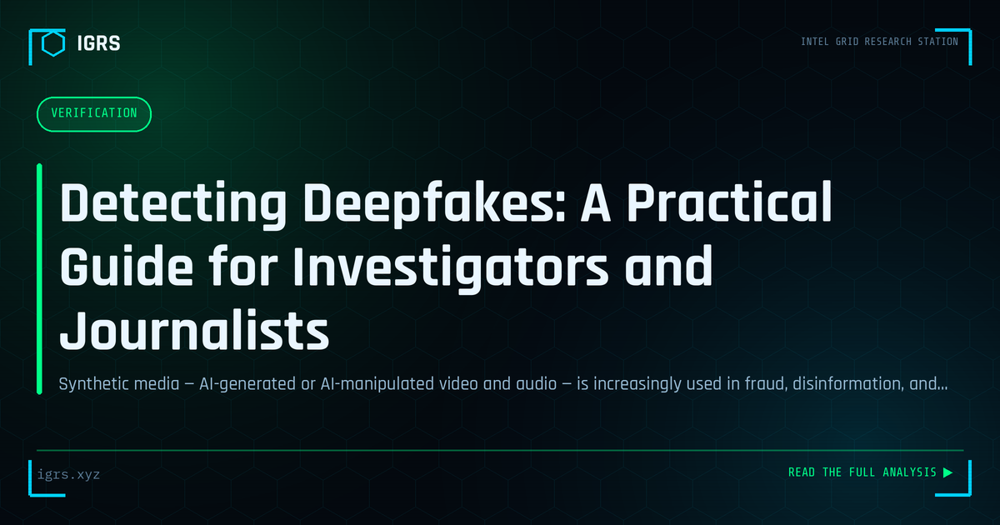

Detecting Deepfakes: A Practical Guide for Investigators and Journalists
| File No. | IGRS-036/2026 |
| Subject | Current methodology for deepfake video and audio detection using available tools |
| Category | Verification |
| Author | Manuj Kumar Pandey |
| Published | 2026-06-05 |
| Reading time | 12 minutes |
Synthetic media — AI-generated or AI-manipulated video and audio — is increasingly used in fraud, disinformation, and extortion. How to detect it with currently available techniques.
The Deepfake Threat in India
Deepfakes — AI-generated synthetic media that convincingly fabricates faces, voices, and videos — have moved from novelty to serious threat. In India, deepfakes are being weaponised for financial fraud, political disinformation, non-consensual imagery, and impersonation of executives and public figures. For investigators, journalists, and security teams, the ability to detect deepfakes and verify media authenticity is now an essential skill. This guide covers detection techniques, OSINT verification tools, and the legal framework in India.
How Deepfakes Are Used Maliciously
| Use Case | How It Causes Harm |
|---|---|
| CEO/executive impersonation | Authorise fraudulent fund transfers |
| Voice cloning scams | Fake distress calls demanding money |
| Non-consensual imagery | Harassment, extortion, reputation damage |
| Political disinformation | Fabricated statements by leaders |
| Identity fraud | Bypass video KYC verification |
Visual Detection Techniques
Many deepfakes still contain detectable artifacts, especially under careful examination:
- Unnatural blinking — irregular or absent eye blinking
- Inconsistent lighting — face lighting that does not match the environment
- Edge blurring — distortion around the face boundary and hairline
- Audio-lip mismatch — speech that does not sync precisely with mouth movement
- Skin texture anomalies — overly smooth or inconsistent skin
- Reflection inconsistencies — mismatched reflections in eyes or glasses
Detection Tools and Platforms
| Tool | Function |
|---|---|
| Intel FakeCatcher | Real-time deepfake detection using blood-flow analysis |
| Sensity AI | Deepfake and synthetic media detection |
| Microsoft Video Authenticator | Confidence scoring for manipulation |
| Deepware Scanner | Video deepfake scanning |
| Hive Moderation | AI-generated content detection |
OSINT Verification of Media
Beyond specialised detectors, OSINT techniques verify whether media is authentic:
- Reverse image search (Google, Yandex, TinEye) to find the original or source
- InVID/WeVerify for frame-by-frame video analysis and keyframe reverse search
- Metadata analysis with ExifTool to check creation details
- Source verification — trace the media to its earliest appearance and original poster
- Cross-referencing against known authentic footage of the subject
Often the fastest verification is finding the original, unaltered media through reverse search — exposing the deepfake by comparison.
Voice Deepfake Detection
Audio deepfakes and voice cloning are increasingly used in vishing scams, including fake distress calls from "family members." Detection focuses on unnatural cadence, inconsistent background noise, robotic artifacts in certain phonemes, and the absence of natural breathing patterns. When in doubt, verification through a known channel — calling the supposed person back on their real number — defeats the scam.
Are Deepfakes Illegal in India?
While India does not yet have a dedicated deepfake law, several provisions apply:
| Section | Act | Application |
|---|---|---|
| Section 319 | BNS 2023 | Cheating by personation |
| Section 66C/66D | IT Act 2000 | Identity theft, personation |
| Section 67/67A | IT Act 2000 | Obscene/sexual content |
| Section 356 | BNS 2023 | Defamation |
The IT Rules 2021 also require intermediaries to remove flagged deepfake content, and the government has signalled stronger regulation of synthetic media. Creating deepfakes to defraud, defame, or create non-consensual imagery is clearly illegal under existing law.
Responding to Deepfake Incidents
Victims of malicious deepfakes should preserve all evidence including URLs and copies of the content, report to the platform for removal under IT Rules 2021, file a complaint at cybercrime.gov.in, and where non-consensual imagery is involved, use the confidential reporting channels for crimes against women and children. Speed in reporting and content removal limits the spread and harm.
The Future of Deepfake Detection
As generative AI improves, deepfakes become harder to detect by eye alone, making automated detection and provenance technologies increasingly important. Content authentication standards that cryptographically sign genuine media at creation, watermarking of AI-generated content, and AI-powered detectors are the emerging defences. For investigators in India, staying current with both the threat and the detection toolset is essential, because the deepfake arms race shows no sign of slowing.